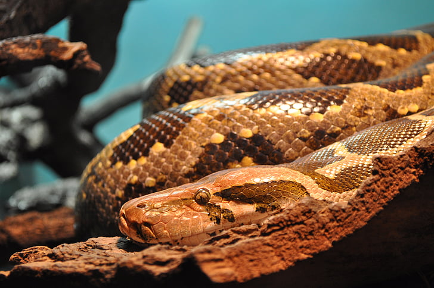

Engerek yılanı, Avrupa, Asya ve Afrika’nın farklı bölgelerinde yaşayan, zehirli yapısıyla bilinen bir yılan türüdür; kalın ve kısa gövdeli, üçgen biçimli başı ve dikey göz bebekleriyle kolayca ayırt edilir; genellikle kahverengi, gri ve yeşilimsi tonlarda desenli derisiyle çevresine uyum sağlar; ortalama 60–90 cm uzunluğa ulaşır, bazı türleri 1 metreden fazla olabilir; avlarını zehirli dişleriyle ısırarak etkisiz hale getirir ve küçük memeliler, kuşlar ile sürüngenlerle beslenir; doğada genellikle kayalık, çalılık ve ormanlık alanlarda görülür, gündüz veya gece aktif olabilir; Türkiye’de özellikle Doğu ve Güneydoğu Anadolu bölgelerinde farklı engerek türleri doğal yayılış gösterir; insanlar için tehlikeli olabilen bu tür, ekosistemde kemirgen popülasyonunu dengelemesiyle önemli bir rol oynar ve kültürel açıdan da korku ile gizemin sembolü olarak bilinir.